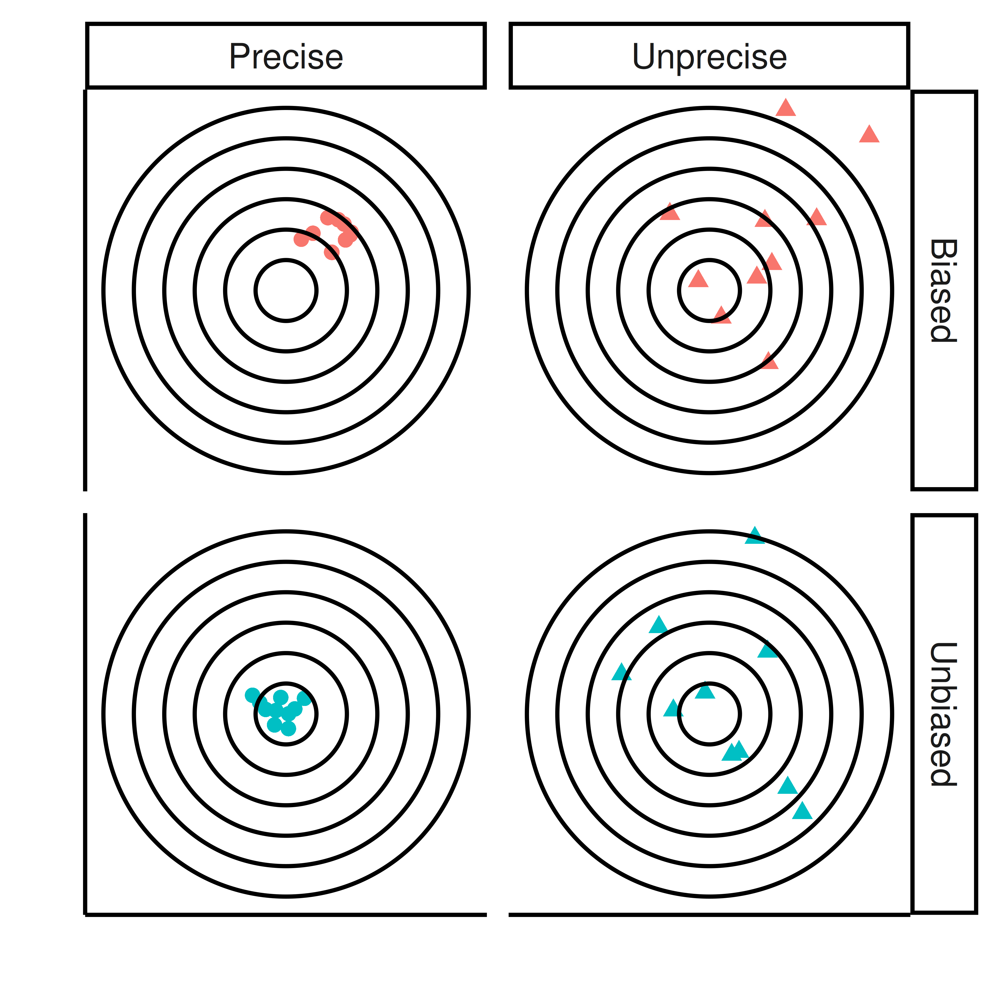
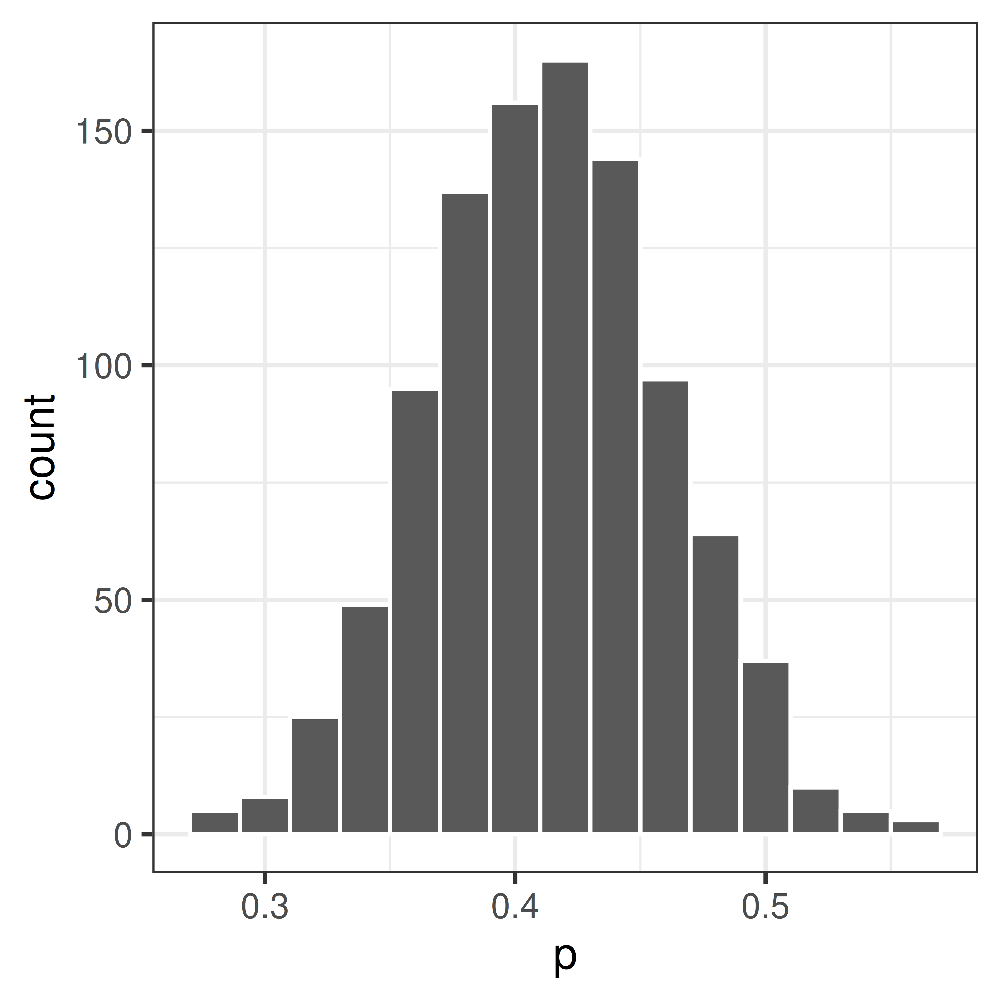

5 Point and interval estimates
5.1 Point estimate
Unknown population parameters can be inferred from estimates from random samples from the population of interest. The sample estimate will be our best guess, a point estimate, of the population parameter.
Example 5.1 (Pollen) If we are interested in how large proportion of the Uppsala population is allergic to pollen, we can investigate this by studying a random sample, e.g. randomly select 100 persons in Uppsala. It is important to actually sample randomly, ideally every individual in the population should have the same probability of being sampled.
In our sample, we observed that 42 of the 100 has a pollen allergy. Hence, the observed sample proportion is \(p=0.42\).
Based on this random sample our point estimate of the Uppsala popultation proportion \(\pi\) is \(\pi \approx p = 0.42\). There is an uncertainty in this measurement, if the experiment is repeated 100 other persons would be selected and our point estimate would be slightly different.
Example 5.2 (Weight) The mean weight of a mouse population, \(\mu\) is unknown. By taking a sample of size \(n\) and measure the mean weight of the mice in the sample, \(m\), we measure a point estimate of the population mean.
5.2 Bias and precision
The sample proportion and sample mean are unbiased point estimates of the corresponding population parameters. It will not be without error, but the larger the sample, the smaller the error.
The expected value of an unbiased point estimate is the the population parameter that it estimates, This means that if you would repeat the sampling many times and compute the point estimate of interest, e.g. sample mean, the average of the sample means would be the population mean.
Even an unbiased point estimate is not perfect, it will have a certain amount of uncertainty.
5.3 Interval estimates
To show the uncertainty an interval estimate for a population parameter can be computed instead of just a point estimate. An interval estimate is an interval of possible values that with high probability contains the true population parameter. An interval estimate is estimated based on sample data. Interval estimation, just like point estimation, is a type of statistical inference.
The width of the interval estimate can be determined from the sampling distribution, i.e. the distribution of the sample property of interest. The dispersion of the sampling distribution is related to the uncertainty of the point estimate and can be used to define the interval estimate. As seen before there are different ways to estimate the sampling distribution.
5.3.1 Bootstrap interval
If the distribution of the sample statistic of interest is unknown, a bootstrap confidence interval can be computed instead.
Bootstraping is performed by resampling with replacement from the available random sample. The resampling distribution can then be used to calculate e.g. a 95% bootstrap interval.
This can be done as follows;
- Put the entire sample in an urn!

In R;
## the sample consists of 50 non-allergic (0) and 42 allergic (1).
x <- rep(0:1, c(58, 42))- Sample from the urn with replacement to compute the bootstrap distribution.
pboot <- replicate(1000, mean(sample(x, replace=TRUE)))ggplot(data.frame(x=pboot), aes(x=x)) + geom_histogram(color="white", binwidth=0.02) + theme_bw() + xlab("p")
- Compute the 95% bootstrap interval. This can be done using the percentile method by calculating the 2.5 and 97.5 percentiles, i.e. the values in the resampling distribution for which 2.5% and 97.5%, respectively, of all the values lie to the left of.
ciboot <- quantile(pboot, c(0.025, 0.975))The 95% bootstrap confidence interval of \(\pi\); [0.32, 0.51].
5.3.2 Confidence interval
A confidence interval is a type of interval estimate associated with a confidence level.
Definition 5.1 A confidence interval for \(\theta\) with confidence level \(1 - \alpha\) is an interval that with probability \(1 - \alpha\) cover the population parameter \(\theta\).
If the sampling distribution of studied statistic is known the confidence interval can be computed.
5.3.3 Confidence interval of proportions
The bootstrap is very useful if you do not know the distribution of our sampled property, but in our proportions example we actually do.
Remember that we can use the central limit theorem to show that
\[P \sim N\left(\pi, SE\right) \iff P \sim N\left(\pi, \sqrt{\frac{\pi(1-\pi)}{n}}\right)\]
It follows that
\[Z = \frac{P - \pi}{SE} \sim N(0,1)\] Based on what we know of the standard normal distribution, we can compute an interval around the population property \(\pi\) such that the probability that a sample property \(p\) fall within this interval is \(1-\alpha\).
\[P(-z_{\alpha/2} < \frac{P - \pi}{SE} < z_{\alpha/2}) = 1 - \alpha\]
For a 95% confidence interval \(z_{0.025}=1.96\) (from a table of the standard normal distribution). Other confidence levels of interest include 90% (\(z_{0.05}=1.64\)) and 99% (\(z_{0.005}=2.58\)). In R, the function ´qnorm` is used to compute \(z_{\alpha/2}\),
## 95% confidence interval, alpha=0.05
qnorm(1-0.05/2)[1] 1.959964## 90% confidence interval, alpha=0.10
qnorm(1-0.10/2)[1] 1.644854## 99% confidence interval, alpha=0.01
qnorm(1-0.01/2)[1] 2.575829The unequality can be rewritten;
\[-z_{\alpha/2} < \frac{P-\pi}{SE}<z_{\alpha/2} \iff P-z_{\alpha/2}SE \leq \pi \leq P + z_{\alpha/2}SE\] Hence,
\[P\left(P-z SE < \pi < P + z SE\right) = 1 - \alpha\] In words, the population proportion \(\pi\) will lie within \(\pm z_{\alpha/2}SE\) from the the sample proportion \(P\).
To get the observed confidence interval, replace the random variable \(P\) with the observed value \(p\) (in our example 0.42).
The confidence interval can be expressed in different was;
\[p-z_{\alpha/2} SE < \pi < p + z_{\alpha/2} SE\] \[\pi = p \pm z_{\alpha/2} SE\] \[(p - z_{\alpha/2} SE, p + z_{\alpha/2} SE)\]
The 95% confidence interval \[\pi = p \pm 1.96 \sqrt{\frac{p(1-p)}{n}}\] will have 95% chance to cover the true value.

Back to our example of proportion pollen allergic in Uppsala. \(p=0.42\) and \(SE=\sqrt{\frac{p(1-p)}{n}} = 0.0493559\).
Hence, the 95% confidence interval is \[\pi = 0.42 \pm 1.96 * 0.05 = 0.42 \pm 0.092\] or \[(0.42-0.092, 0.42+0.092) = (0.32, 0.52)\]
5.3.4 Confidence interval of mean
The confidence interval of mean can be derived similarly.
The mean of a sample of \(n\) independent and identically normal distributed observations \(X_i\) is normally distributed;
\[\bar X \sim N(\mu, \frac{\sigma}{\sqrt{n}})\]
If \(\sigma\) is unknown the statistic
\[T = \frac{\bar X - \mu}{\frac{s}{\sqrt{n}}}\]
is t-distributed with \(n-1\) degrees of freedom, in short \(T \sim t(n-1)\).
It follows that
\[ \begin{aligned} P\left(-t < \frac{\bar X - \mu}{\frac{\sigma}{\sqrt{n}}} < t\right) = 1 - \alpha \iff \\ P\left(\bar X - t \frac{\sigma}{\sqrt{n}} < \mu < \bar X + t \frac{\sigma}{\sqrt{n}}\right) = 1 - \alpha \end{aligned} \]
The confidence interval with confidence level \(1-\alpha\) is thus;
\[\mu = \bar x \pm t \frac{s}{\sqrt{n}}\]
The \(t\) values for different values of \(\alpha\) and degrees of freedom are tabulated and can be computed in R using the function qt.
For a 95% confidence interval, i.e. \(\alpha=0.05\), and \(n=5\), \(t\) is 2.7764451 and can be computed using
n=5
alpha = 0.05
## t value
qt(1-alpha/2, df=n-1)[1] 2.776445